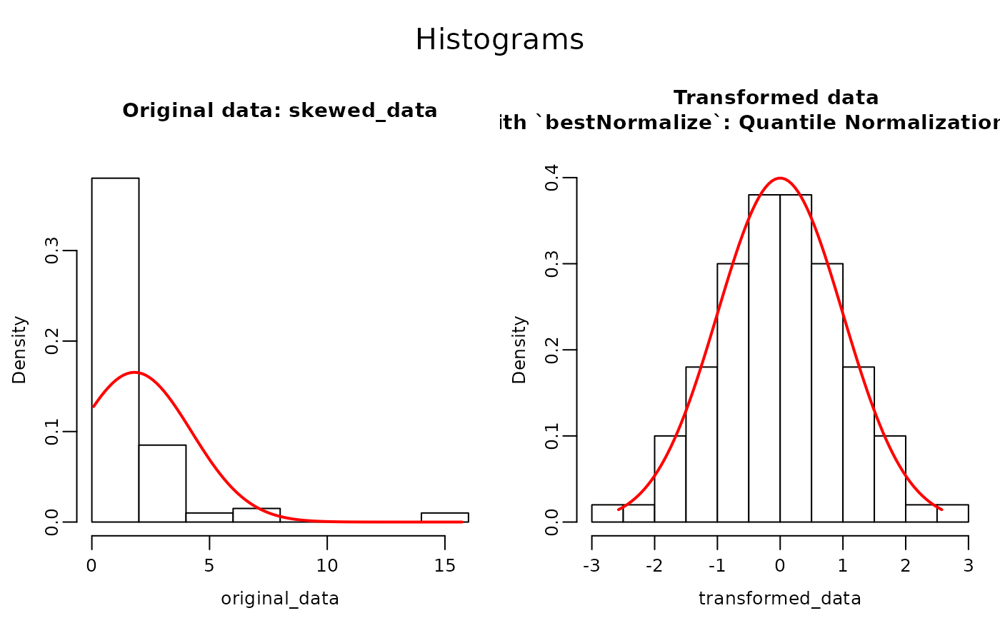
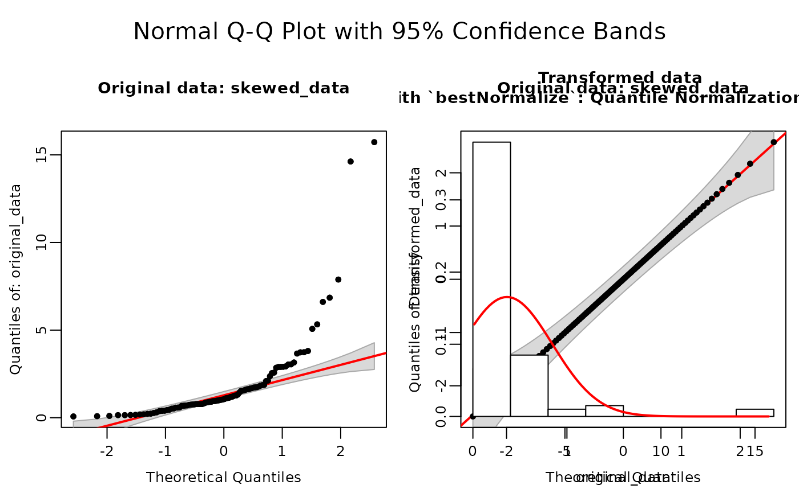
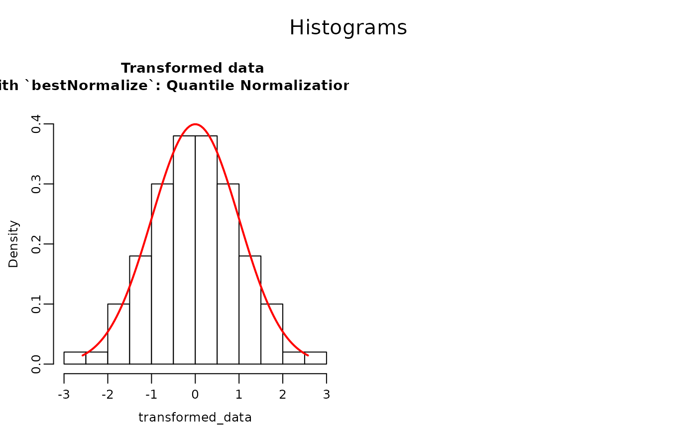
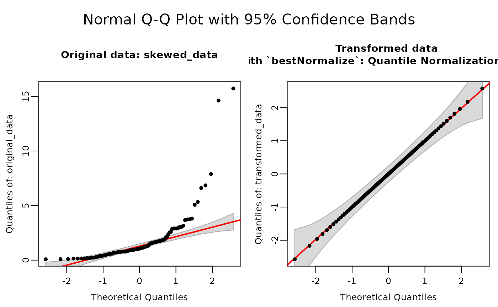

f_bestNormalize: Automated Data Normalization with bestNormalize
f_bestNormalize.RdApplies optimal normalization transformations using 'bestNormalize', provides diagnostic checks, and generates comprehensive reports.
Usage
f_bestNormalize(
data,
alpha = 0.05,
plots = FALSE,
data_name = NULL,
output_type = "off",
save_as = NULL,
save_in_wdir = FALSE,
close_generated_files = FALSE,
open_generated_files = TRUE,
...
)Arguments
- data
Numeric vector or single-column data frame.
- alpha
Numeric. Significance level for normality tests (default =
0.05).- plots
Logical. If
TRUE, plots Q-Q plots and Histograms of the original and transformed data. Default isFALSE.- data_name
A character string to manually set the name of the data for plot axis and reporting. Default extracts name from input object.
data.- output_type
Character string specifying the output format:
"pdf","word","rmd","off"(no file generated) or"console". The option"console"forces output to be printed. Default is"off".- save_as
Character string specifying the output file path (without extension). If a full path is provided, output is saved to that location. If only a filename is given, the file is saved in
tempdir(). If only a directory is specified (providing an existing directory with trailing slash), the file is named "data_name_transformed" in that directory. If an extension is provided the output format specified with option "output_type" will be overruled. Defaults tofile.path(tempdir(), "data_name_transformed.pdf").- save_in_wdir
Logical. If
TRUE, saves the file in the working directory. Default isFALSE, this avoid unintended changes to the global environment. Ifsave_aslocation is specifiedsave_in_wdiris overwritten bysave_as.- close_generated_files
Logical. If
TRUE, closes open 'Word' files. This to be able to save the newly generated file by thef_bestNormalize()function. 'Pdf' files should also be closed before using the function and cannot be automatically closed. Default isFALSE.- open_generated_files
Logical. If
TRUE, Opens the generated output file, this to directly view the results after creation. Files are stored in tempdir(). Default isTRUE.- ...
Additional arguments passed to bestNormalize.
Value
Returns an object of class `f_bestNormalize` containing:
transformed_dataNormalized vector.bestNormalizeFull bestNormalize object from original package.data_nameName of the analyzed dataset.transformation_nameName of selected transformation.shapiro_originalShapiro-Wilk test results for original data.shapiro_transformedShapiro-Wilk test results for transformed data.norm_statsData frame of normality statistics for all methods.rmdRmd code if outputype = "rmd".
Also generates reports in specified formats, when using output to console and plots = TRUE, the function prints QQ-plots, Histograms and a summary data transformation report.
#' @return An object of class 'f_bestNormalize' containing results from "bestNormalize", the input data, transformed data, Shapiro-Wilk test on original and transformed data. Using the option "output_type", it can also generate output in the form of: R Markdown code, 'Word', or 'pdf' files. Includes print and plot methods for objects of class 'f_bestNormalize'.
Details
This is a wrapper around the 'bestNormalize' package. Providing a fancy output and the settings of 'bestNormalize' are tuned based on sample size n.
If n < 100, loo = TRUE, allow_orderNorm = FALSE and r doesn't matter as loo = TRUE.
If 100 <= n < 200, loo = FALSE, allow_orderNorm = TRUE and r = 50.
If n >= 200, loo = FALSE, allow_orderNorm = TRUE, r = 10. These setting can be overwritten by user options.
This function requires [Pandoc](https://github.com/jgm/pandoc/releases/tag) (version 1.12.3 or higher), a universal document converter.
Windows: Install Pandoc and ensure the installation folder
(e.g., "C:/Users/your_username/AppData/Local/Pandoc") is added to your system PATH.macOS: If using Homebrew, Pandoc is typically installed in "/usr/local/bin". Alternatively, download the .pkg installer and verify that the binary’s location is in your PATH.
Linux: Install Pandoc through your distribution’s package manager (commonly installed in "/usr/bin" or "/usr/local/bin") or manually, and ensure the directory containing Pandoc is in your PATH.
If Pandoc is not found, this function may not work as intended.
References
Peterson, C. (2025). bestNormalize: Flexibly calculate the best normalizing transformation for a vector. Available at: https://cran.r-project.org/package=bestNormalize
Author
Sander H. van Delden plantmind@proton.me
Examples
# \donttest{
# Create some skewed data (e.g., using a log-normal distribution).
skewed_data <- rlnorm(100, meanlog = 0, sdlog = 1)
# Use set.seed to keep the outcome of bestNormalize stable.
set.seed(123)
# Transform the data and store all information in f_bestNormalize_out.
f_bestNormalize_out <- f_bestNormalize(skewed_data)
# Print the output.
print(f_bestNormalize_out)
#>
#> Data transformation of skewed_data using `bestNormalize`: Quantile Normalization (ORQ)
#> Original Data Shapiro-Wilk Test: W = 0.5823 p-value = 2.009e-15
#> Transformed Data Shapiro-Wilk Test: W = 0.9996 p-value = 1
#>
#> Below are all considered transformations: [Pearson P / df, lower => more normal] (n=100)
#> Transformation Normality_Stat
#> arcsinh(x) 2.324
#> Box-Cox 2.402
#> Center+scale 14.180
#> Double Reversed Log_b(x+a) 47.855
#> Exp(x) 115.065
#> Log-transform 1.674
#> Quantile Normalization (ORQ) 0.062
#> sqrt(x + a) 3.702
#> Yeo-Johnson 1.362
#>
#>
#> Check the normality plots, by using the plot() function or 'plots = TRUE' option
# Show histograms and QQplots.
plot(f_bestNormalize_out)

# Directly store the transformed_data from f_bestNormalize and force to show
# plots and transformation information.
transformed_data <- f_bestNormalize(skewed_data, output_type = "console")$transformed_data
#>
#> Data transformation of skewed_data using `bestNormalize`: Quantile Normalization (ORQ)
#> Original Data Shapiro-Wilk Test: W = 0.5823 p-value = 2.009e-15
#> Transformed Data Shapiro-Wilk Test: W = 0.9996 p-value = 1
#>
#> Below are all considered transformations: [Pearson P / df, lower => more normal] (n=100)
#> Transformation Normality_Stat
#> arcsinh(x) 2.324
#> Box-Cox 2.402
#> Center+scale 14.180
#> Double Reversed Log_b(x+a) 47.855
#> Exp(x) 115.065
#> Log-transform 1.674
#> Quantile Normalization (ORQ) 0.062
#> sqrt(x + a) 3.702
#> Yeo-Johnson 1.362
#>
#>
#> Check the normality plots, by using the plot() function or 'plots = TRUE' option


# Any other transformation can be choosen by using:
boxcox_transformed_data <- f_bestNormalize(skewed_data)$bestNormalize$other_transforms$boxcox$x.t
# and substituting '$boxcox' with the transformation of choice.
#To print rmd output set chunck option to results = 'asis' and use:
f_bestNormalize_rmd_out <- f_bestNormalize(skewed_data, output_type = "rmd")
cat(f_bestNormalize_rmd_out$rmd)
#>
#>
#> ## Data transformation of skewed_data using `bestNormalize`: Quantile Normalization (ORQ) .
#>
#> **Original Data Shapiro-Wilk Test:** W = 0.5823 p-value = 2.0093e-15
#>
#> **Transformed Data Shapiro-Wilk Test:** W = 0.9996 p-value = 1
#>
#>
#>
#> **Table.** All considered transformations: [Pearson P / df, lower => more normal] (n=100)
#>
#> -------------------------------------------
#> Transforma Normality_
#> tion Stat
#> ------------------------------ ------------
#> arcsinh(x) 2.324
#>
#> Box-Cox 2.402
#>
#> Center+scale 14.180
#>
#> Double Reversed Log_b(x+a) 47.855
#>
#> Exp(x) 115.065
#>
#> Log-transform 1.674
#>
#> Quantile Normalization (ORQ) 0.062
#>
#> sqrt(x + a) 3.702
#>
#> Yeo-Johnson 1.362
#> -------------------------------------------
# }
